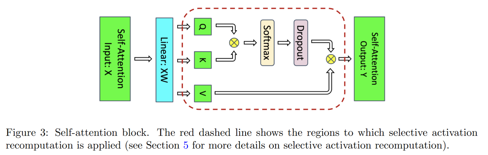
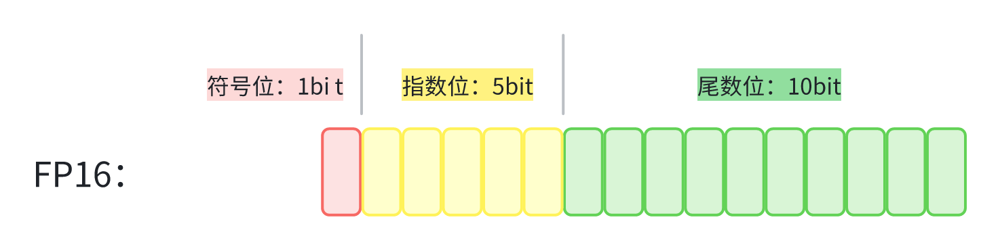
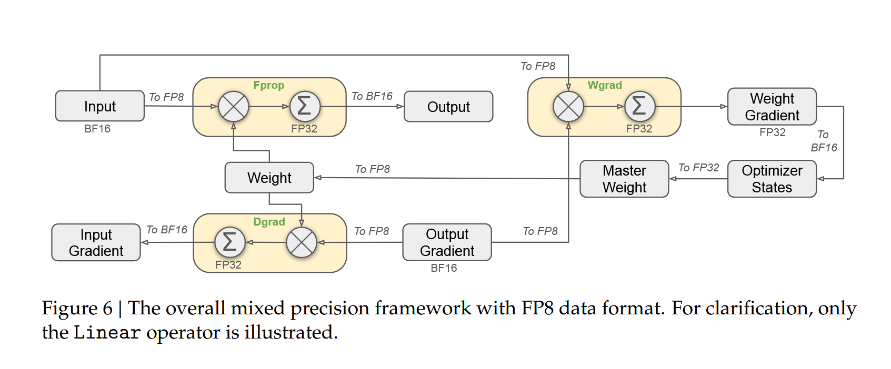
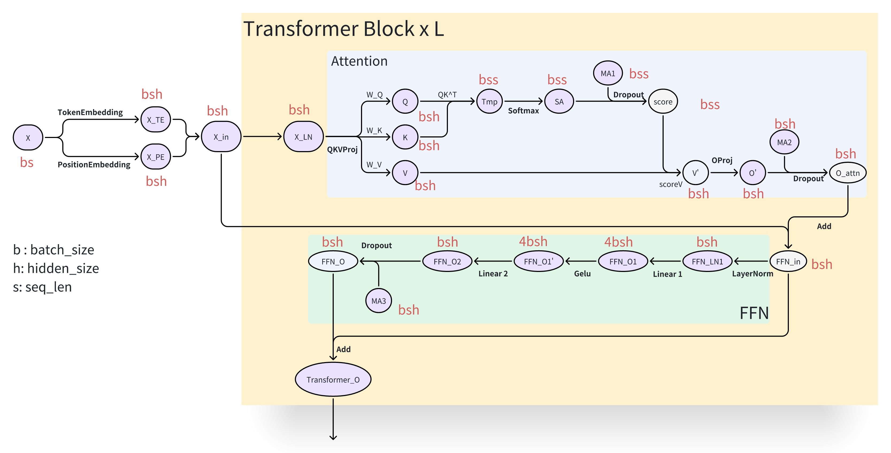

05.大模型训练内存与参数计算#
Author by: 刘凯旋
!!!!!!!!! 1）看 PR 修改，注意格式 2）没意义的信息，或者太通用的信息删掉了
大模型参数量的计算#
准确计算模型的参数量是理解其复杂性和显存占用的基础。以下以一个 \(L\) 层的标准 Transformer 模型为例，逐模块分解其参数。
!!!!!!!!! 把下面每一层的计算单独分开一个三级标题，单独用公式呈现，不要大模型的了列表方式
Embedding 层参数#
Token Embedding：
\(XW_t，W_t \in \mathbb{R}^{vocab\_size \times hidden\_size}\) 输入\(X\in \mathbb R^{batch\_size \times seq\_len}\), \(x_{i,j} \in \mathbb X\)表示为第\(i\) 个序列的第\(j\)个token 在词表中的index，是one-hot 向量的简化。\(x_{ij}W_t\) 的结果是\(W_t\)的第\(j\)行，实现了离散的tokenID 到稠密向量的映射。综上，该层的参数量为： $\(P_{TE} = vocab\_size \times hidden\_size\)$
Position Embedding：
在标准的Transformer架构中，使用固定正弦编码： \(PE_{(pos, 2i)} = \sin(pos / 10000^{2i/d_{model}}) , PE_{(pos, 2i+1)} = \cos(pos / 10000^{2i/d_{model}})\) 参数量: $\(P_{TE} = 0\)$
若使用可学习矩阵 \(W_p \in \mathbb{R}^{max\_seq\_len \times hidden\_size}\)，参数量为： $\(P_{PE} = max\_seq\_len \times hidden\_size\)$
Transformer Block (每层)#
每个Transformer Block 由一个带残差连接的注意力模块和一个带残差连接的前馈网络（FFN）模块组成，每个模块前都配有 LayerNorm。
LayerNorm：
\[y = \frac{x - \mathbb{E}[x]}{\sqrt{\mathbb{V}ar[x] + \epsilon}} \cdot \gamma + \beta\]包含两个可训练向量：增益 \(\gamma \mathbb R^{hidden\_size}\) 和偏置 \(\beta\in \mathbb R^{hidden\_size}\)，参数量为： $\(P_{LN} = 2 \times hidden\_size = 4 \cdot hidden\_size\)\( （通常\)hidden_size << batch_size$，在参数量估算时可忽略不计）
注意力模块 (Attention Module)：
一个标准的Single-Head Attention模块前向计算过程如下：

输入： \(X \in \mathbb R^{batch\_ size \times seq\_len \times hidden\_size}\)
Linear Proj： \(W_{Q,K,V} \in \mathbb R^{hidden\_size \times 3 hidden\_size}\) \([Q,K,V] = XW_{Q,K,V} \in \mathbb R^{batch\_size \times seq\_len \times 3hidden\_size}\)
计算注意力分数并归一化（概率空间）： \(\text{alignment} = \frac{QK^T}{\sqrt {hidden\_size}} \in \mathbb R^{batch\_size \times seq\_len \times seq\_len}\) \(\text{attn\_score} =\text{ softmax}(\text{alignment})\)
输出： \(\text{Attn\_Output} = \text{drop\_out}(\text{attn\_score})V,\quad \in \mathbb R^{batch\_size \times seq\_len \times hidden\_size}\)
输出投影: \(W_o\in \mathbb R^{hidden\_size \times hidden\_size}\)
参数量估计：
Q, K, V 投影矩阵：通常通过一个大的线性层实现，参数量 \(P_{W_{Q,K,V}} = 3 \cdot hidden\_size^2\)
输出投影矩阵：将注意力输出投影回 \(hidden\_size\) 维，参数量 \(P_{W_O} = hidden\_size^2\)
Dropout：Dropout 在训练阶段以概率 \(p\) 随机将神经元的输出置零，但在前向传播时并不引入任何可训练参数，不贡献参数量。
综上，注意力模块参数量为： $\(P_{Attn} = P_{W_{Q,K,V}} + P_{W_O} = 4 \cdot hidden\_size^2\)$
前馈网络模块 (FFN Module)：
一个标准的FFN 模块计算流程如下：
输入：\(X \in \mathbb R^{batch\_ size \times seq\_len \times hidden\_size}\)
输出：\(\text{FFN\_Output} = \text{drop\_out}( \text{GeLU}(XW_1)W_2)\quad W_1 \in \mathbb R^{hidden\_size \times h'}, W_2 \in \mathbb R^{h' \times hidden\_size}\)。 其中\(h'\) 取 \(4hidden\_size\) , \(\text{GeLU}\) 不贡献参数
参数量估计： $\(P_{W_1} = P_{W_2} = hidden\_size \times 4hidden\_size = 4hidden\_size^2\)\( \)\(P_{FFN} = P_{W_1} + P_{W_2} = 8hidden\_size^2\)$
每层总参数量： $\(P_{layer} = P_{LN} + P_{Attn} + P_{LN} + P_{FFN} \approx 12 \cdot hidden\_size^2\)$
输出层#
通常与 Token Embedding 共享权重，即使用 \(W_t^T\) 进行投影，不引入额外参数。 参数量 \(P_{out} = 0\)
若不共享，则需要一个独立的线性层，参数量\(P_{out} = vocab\_size \times hidden\_size\)
模型总参数量 \(\phi\) 估算公式：
实例分析#
!!!!!!!!! 除了通用的GPT 模型结构以外，把当前经典的几个模型 LLAMA4、DeepSeek3、Qwen3、Grok4 的模型结构和参数量计算拿出来看，去深入到模型结构的真正计算。
为了更直观地理解大模型参数量的计算方式，我们以LLaMA-2 70B 为例进行分析，其核心配置如下：
{
"hidden_act": "silu",
"hidden_size": 8192,
"intermediate_size": 28672,
"max_position_embeddings": 4096,
"num_attention_heads": 64,
"num_hidden_layers": 80,
"num_key_value_heads": 8,
"torch_dtype": "float16",
"vocab_size": 32000
}
Embedding 层参数
Token Embedding： $\(P_{embed} = vocab\_size \times hidden\_size = 32000 \times 8192 \approx 262.14M\)$
Position Embedding：0（使用 RoPE，不引入可学习参数）
每层参数量
注意力模块参数量： $\(P_{attn} = 3 \times num\_heads \times hidden\_size \times head\_dim + hidden\_size \times hidden\_size\)$
其中 \(head\_dim = \frac{hidden\_size}{num\_heads}\)
前馈神经网络参数量： $\(P_{ffn} = 2 \times hidden\_size \times 4 \times hidden\_size\)$
单层总参数量： $\(P_{layer} = 12 \times 8192^2 = 805.31M\)$
输出层参数
0（与输入层共用词向量编码参数）
总参数量
浮点数精度与字节占用#
!!!!!!!! 现在都用 FP8/FP6 混合精度训练了，了解最新的技术，然后补充详细内容
计算机中的浮点数遵循 IEEE 754 标准，由符号位 \(S\)、指数位 \(E\) 和尾数位 \(M\) 组成，下图是 FP16 的 IEEE 754 表示。

一个浮点数的数学表示为：
其中，记指数位的 bit 数为 \(k\), 偏置值：\(2^{k-1}-1\)。
指数位决定了数值的动态范围（能表示的最大最小值），尾数位决定了数值的精度（有效数字位数）。更多的指数位意味着能表示更大或更小的数值，更多的尾数位意味着更高的精度。 现代深度学习中常用的数值精度格式如下：
精度格式 |
位宽 |
字节数 |
符号位 |
指数位 |
尾数位 |
|---|---|---|---|---|---|
FP32 |
32 bits |
4 bytes |
1 bit |
8 bits |
23 bits |
FP16 |
16 bits |
2 bytes |
1 bit |
5 bits |
10 bits |
BF16 |
16 bits |
2 bytes |
1 bit |
8 bits |
7 bits |
INT8 |
8 bits |
1 byte |
1 bit |
- |
7 bits |
INT4 |
4 bits |
0.5 bytes |
1 bit |
- |
3 bits |
混合精度训练#
!!!!!!!! 待完善
混合精度训练 (Mixed Precision Training) 是当前的主流实践。它在前向传播和反向传播过程中使用 FP16/BF16 进行计算和存储，以提升速度并节省显存，同时维护一个 FP32 格式的主参数副本 (Master Weight) 用于优化器更新，以此保证训练的数值稳定性。
传统的混合精度训练主要基于FP16或BF16格式。在这种框架下，模型参数以FP16/BF16格式存储用于前向和反向传播，而优化器则维护FP32精度的主参数副本用于精确更新。对于FP16训练，由于动态范围有限，需要采用损失缩放技术来防止梯度下溢；而BF16由于保留了FP32的指数位范围，通常不需要损失缩放。从内存开销来看，传统混合精度训练需要存储FP16/BF16模型参数（\(2\Phi\)字节）和FP32主参数副本（\(4\Phi\)字节），总额外开销达到6×φ字节，相比纯FP32训练仍有优化空间。
随着模型规模突破千亿参数，FP8 (8-bit Floating Point) 格式成为新的训练标准。FP8 主要有两种格式：
FP8 格式对比：
格式 |
符号位 |
指数位 |
尾数位 |
动态范围 |
精度特性 |
适用场景 |
|---|---|---|---|---|---|---|
E4M3 |
1 bit |
4 bits |
3 bits |
\(2^{-6}\) ~ \(448\) |
更高精度 |
前向传播、权重存储 |
E5M2 |
1 bit |
5 bits |
2 bits |
\(2^{-14}\) ~ \(57344\) |
更大动态范围 |
反向传播、梯度计算 |
随着模型规模突破千亿参数，FP8格式成为新的训练标准。在前向传播阶段，输入数据和权重均转换为FP8格式，但实际计算在FP32精度下进行，输出再转换为BP16格式；在反向传播阶段，数据梯度计算将输入梯度转换为BP16并在FP32下计算，输出梯度转换为FP8，而权重梯度计算在FP32下进行后也转换为FP8格式；在优化器更新阶段，系统维护FP32精度的主权重和优化器状态，权重梯度从FP32转换为BP16/BF16用于参数更新。
FP8混合精度训练具有显著优势。在显存效率方面，FP8模型参数仅需\(\Phi\)字节，相比BF16混合精度显存占用减半。在计算效率方面，NVIDIA H100 GPU的FP8 Tensor Core算力达到FP16的2倍，同时通信带宽需求降低50%，显著加速分布式训练。在数值稳定性方面，E4M3格式用于前向传播以保证激活值精度，E5M2格式用于反向传播以覆盖梯度的大动态范围。
除了FP8之外，FP6作为最新的极致量化方案正在探索中。FP6每个参数仅占0.75字节，使得千亿参数模型的权重存储仅需75GB，主要应用于权重存储和前向传播，需要配合FP8/BF16进行梯度计算。然而，FP6的动态范围极其有限，需要精细的量化策略和专门的硬件支持，目前仍处于发展阶段。
DeepSeek-V3的混合精度训练实践#

DeepSeek-V3（671B参数）采用了先进的FP8混合精度训练方案，体现了该技术在前沿模型中的实际应用。其训练配置采用多层次精度策略：前向传播使用FP8 E4M3格式处理权重和激活值，反向传播使用FP8 E5M2格式进行梯度计算，优化器状态使用FP32维护Adam状态，主参数副本则使用BF16格式以平衡精度和显存需求。
在显存优化方面，传统BF16混合精度需要约4TB显存（其中模型参数1342GB，主参数2684GB），而FP8混合精度仅需约2.7TB（模型参数671GB，主参数1342GB，梯度671GB），实现了约33%的显存节省。同时，通过利用NVIDIA H100的第四代Tensor Core，FP8矩阵乘法吞吐量达到3958 TFLOPS，相比BF16的1979 TFLOPS实现2倍理论加速，训练时长减少约40%，而最终模型困惑度与BF16训练相当。
为保证数值稳定性，DeepSeek-V3采用了多项创新技术。Per-Tensor Scaling为每个张量动态计算缩放因子，结合延迟缩放更新策略避免频繁计算开销。梯度裁剪技术与FP8量化协同工作，有效防止梯度爆炸。自适应损失缩放根据梯度分布动态调整缩放因子，混合精度累加器在LayerNorm、Softmax等关键操作中使用FP32累加，同时通过统计监控实时跟踪激活值和梯度的数值范围，及时调整量化策略。
在技术创新方面，DeepSeek-V3实现了细粒度量化，对不同网络层使用不同的FP8格式：注意力层使用E4M3保证高精度，FFN层则可使用更激进的E5M2格式。通过量化感知训练，在训练过程中模拟FP8量化效果，使模型权重分布更适合低比特表示。对于混合专家模型结构，专家参数使用FP8存储，而路由计算使用FP32保证精度，巧妙平衡了显存节省与路由准确性。
通过FP8混合精度训练，DeepSeek-V3在保持模型性能的同时显著降低了训练成本，使得千亿参数规模的模型训练变得更加可行和高效。这一实践标志着大模型训练进入了超低精度时代，为未来万亿参数模型的训练奠定了坚实的技术基础，推动了整个领域向更高效、更可扩展的方向发展。
训练显存分析#
!!!!!!! 大模型要做性能优化，优化哪部分？深度学习了解
模型训练中，GPU 显存的消耗远不止模型参数本身。对于一个拥有 ϕ 个参数的模型，一次完整的训练迭代（Step）所产生的显存占用可以系统地分为以下几个核心部分。理解这些组成有助于进行有效的显存优化和模型部署。
静态显存占用分析#
!!!!!!!!! 不要用大模型的列表方式，改成自己理解的形式
在深度学习训练过程中，静态显存是指那些需要在GPU中持久存储的数据部分，主要包括模型参数、梯度和优化器状态三大部分。这些组件构成了训练过程中的基础存储开销，其大小直接决定了能够训练模型规模的上限。
模型参数显存构成了静态显存的基础部分。模型的 \(\phi\) 个参数需要完整存储在GPU显存中。在现代混合精度训练实践中，参数通常以FP16格式存储，每个参数占用2字节空间。因此，参数显存的总占用为 \(2\phi\) 字节。以Qwen3-14B模型为例，其140亿个参数以float16或bf16精度存储时，所需的显存量约为28GB，这构成了模型训练的基础内存门槛。
梯度显存在反向传播过程中扮演关键角色。为了进行参数更新，需要为每个参数计算并存储对应的梯度值 \(g_t = \frac{\partial \mathcal{L}}{\partial \theta}\)。梯度通常采用FP32精度存储以确保数值稳定性，每个梯度值占用4字节空间。对于拥有 \(\phi\) 个参数的模型，梯度显存的总占用达到 \(4\phi\) 字节，相当于参数显存的两倍。
优化器状态显存是静态显存中最为复杂的部分。以广泛使用的Adam优化器为例，它为每个参数维护两个独立的指数移动平均量：一阶动量 \(m_t^{(i)} = \beta_1 m_{t-1}^{(i)} + (1-\beta_1) g_t^{(i)}\) 存储参数梯度的指数移动平均，帮助优化器在梯度方向上保持惯性；二阶动量 \(v_t^{(i)} = \beta_2 v_{t-1}^{(i)} + (1-\beta_2) (g_t^{(i)})^2\) 存储梯度平方的指数移动平均，实现学习率的自适应调整。这两个动量均以FP32精度存储，每个参数在优化器状态中的显存占用达到8字节。
综合上述三个核心组成部分，静态显存的总体占用可以通过以下公式精确计算：
动态显存占用分析#
在模型训练过程中，除了静态显存占用外，还存在随时间变化的动态显存开销。这部分显存主要由前向传播中产生的激活值，以及各种临时缓冲区和内存管理开销构成。
激活值 是指在神经网络前向传播过程中产生的中间张量，这些张量在后续的反向传播梯度计算中必须被保留。下面我们以标准的 Transformer 架构为例，对其关键组件中需要保存的激活值进行详细分析：
残差连接的结果不属于必须存储的激活值，因其梯度计算仅依赖于该分支内的中间结果。例如，对于 \(y = x + f_\theta(x)\)，在计算 \(\partial y / \partial \theta\) 时，仅需 \(f_\theta(x)\) 内部的前向缓存。
Dropout 所使用的掩码矩阵（Mask Matrix）属于激活值，需在前向时保存。通常掩码矩阵以 Byte 类型存储（1字节），而中间激活值若为 FP16/BF16 则占用 2 字节。
下图中的紫色图标清晰标识出了 Transformer 层中需要存储的激活张量（分析中暂不考虑 Embedding 层，并忽略 LayerNorm 的均值与方差所产生的约 \(2bs\) 字节开销）：

基于此分析，我们可以对激活值的总显存占用进行量化估算：
注意力模块的激活显存占用为： $\(MemActive_{Attn} = 2(bsh + 3bsh + 2bss + bsh) + bs^2 + bsh = 11bsh + 5bs^2\ \text{Byte}\)$
前馈神经网络模块的激活显存占用为： $\(MemActive_{FFN} = 2(bsh + 4bsh + 4bsh + bsh + bsh) + bsh = 23 bsh \ \text{Byte}\)$
因此，总激活值显存占用为： $\(MemActive = MemActive_{Attn} + MemActive_{FFN} = 34bsh + 5bs^2 \ \text{Byte}\)$
其他显存开销 构成了动态显存的另一重要组成部分。这包括各种临时缓冲区的分配、GPU内存管理产生的内存碎片，以及框架运行时的内部开销。根据实践经验，这类额外显存占用通常可以估算为模型参数内存的 \(1.X\) 倍，即大约 \(2.X\phi\) 字节。这部分开销虽然不如激活值那样具有明确的计算公式，但在大规模模型训练中却是不容忽视的因素。
总结与思考#
!!!!!!! 一段话总结
参考与引用#
!!!!!!! 希望你不是大模型生成的，而是自己去看论文，看知乎，看别人的解读，然后总结成自己的理解；补充参考